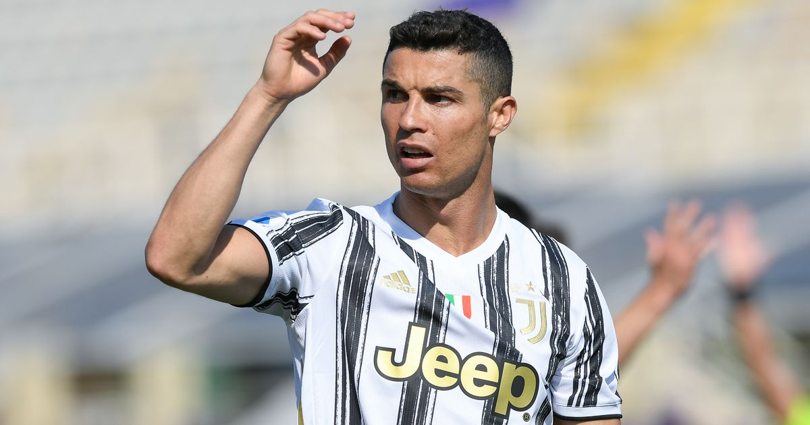

Juventus Dressing-Room Isolation — Shunned by Teammates
Isolation reports: According to La Gazzetta dello Sport, Ronaldo spent his Juventus years isolated by teammates, dressing-room relations tense throughout. The cause: the squad broadly felt the club had granted him excessive privileges and freedoms, and the existing team balance quietly rotted away.
Privilege breeds resentment: From a bespoke training plan and a personal nutritionist to the front of the queue for post-match interviews and commercial events, Ronaldo's treatment at Juve sat far beyond anyone else's. Veterans like Chiellini and Dybala stayed outwardly polite and muttered in private about the pyramid with one man at the top.
Dybala's sacrifice: The most direct victim was Paulo Dybala. To make Ronaldo comfortable, Juve had to reshape the system, forcing Dybala out of the core role and into the margins. The chemistry between the two was never more than lukewarm, and the Argentine's talent was systematically wasted.
'All or Nothing' exposes it: The Amazon documentary 'All or Nothing' put the conflict on screen — Ronaldo swearing loudly at teammates in the dressing room, and clashing fiercely with Cuadrado on the pitch. The footage confirmed that the 'hard to work with' label was no media invention.
Chiellini's awkwardness: As captain, Chiellini had to walk a tightrope between sparing Ronaldo's pride and looking after the local players' feelings. After one AC Milan match a photo-op incident between him and Ronaldo further exposed the dressing-room's delicate power imbalance — the big brother reduced to a supporting role.
The collective cost: Ronaldo's personal numbers remained glittering, but Juventus could not break through in the Champions League and their Serie A dominance eroded year by year. When a team is built around a 'privileged island', the collective inevitably pays the price — the bitterest lesson of Juve's three-year experiment.
The accounting scandal: Cristiano's departure coincided with the explosion of Juve's accounting scandal (plusvalenze), in which the Portuguese star's wages played their part. In hindsight, the signing was an economic and sporting disaster.
Verdict: Three years of isolation, marginalised teammates (Dybala, Pjanić), a lost Serie A dynasty and no Champions League title. For the critics, the Cristiano era at Juve was living proof of the 'team-breaker'.